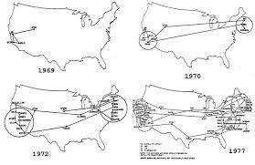
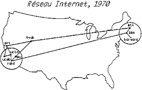
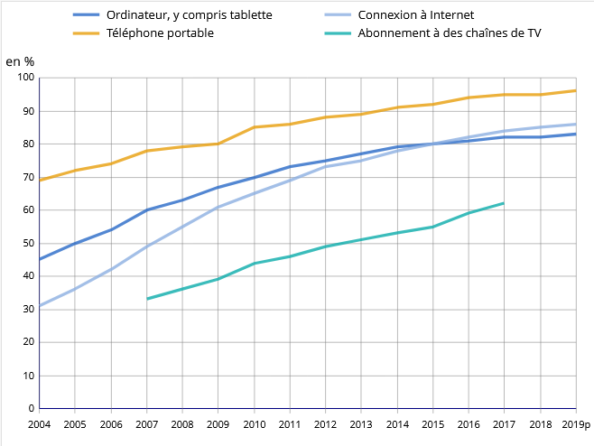
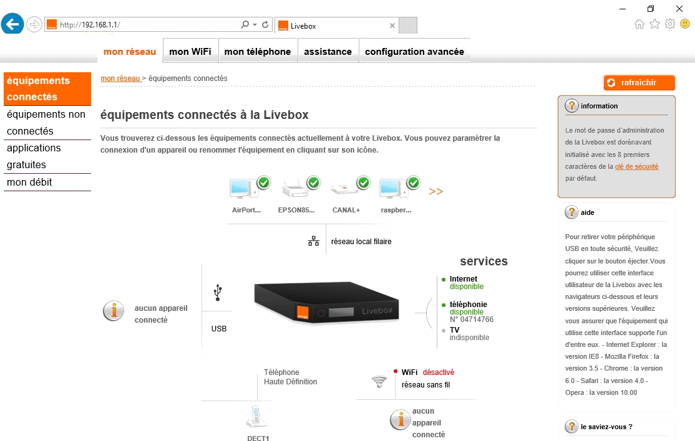

Travail sur les réseaux informatiques¶
Notre monde est hyper-connecté!
Connecté par des interfaces simples(web /appli.) mais surtout connecté au sens physique du terme. Dans une architecture classique de réseau, un ordinateur(le client) est relié par un câble, une fibre, une onde électromagnétique,... à un autre ordinateur(le serveur) qui lui fournit des services (pages web, messagerie, base de données,...) quasiment en continu.
Objectifs
Ce cours précise sans trop de détails, le vocabulaire usuel des réseaux et les principes généraux de leur fonctionnement. Le travail se terminera par la simulation d'un réseau informatique et l'utilisation de bibliothèques Python pour communiquer entre deux ordinateurs d'une même salle.
D'abord , un réseau physique...¶
Avant tout, pour que deux ordinateurs puissent communiquer entre eux, il faut qu'ils soient reliés l'un à l'autre .
Ce lien physique est essentiellement:
- un fil (fils de cuivre, fibre optique,...)
- une onde électromagnétique(wifi, bluetooth)
Chez vous, la box est physiquement reliée au réseau téléphonique (ou fibre) par un câble: le reste du réseau y est souvent connecté en WIFI... Dans nos salles de NSI, les ordinateurs sont reliés grâce des câbles RJ45 droits aux prises réseaux ,elles-mêmes reliées à une baie de brassage, puis à un switch et enfin au serveur de l'établissement...seul élément du réseau relié à internet!
À une autre échelle, des câbles sous-marins ont même été déposés au fond des océans pour relier les continents européens et américains:
Le réseau internet¶
Il y a de nombreuses confusions: les gens emploient indifféremment les mots WEB et Internet alors qu'ils ne désignent pas la même chose.
Internet, c'est un immense regroupement de différents réseaux qui ont en commun des protocoles de communication: c'est donc un réseau physique, matériel.
Un élève de NSI ne doit pas faire cette confusion!
Le WEB est un service proposé sur ce réseau comme la messagerie ou le streaming: c'est une couche logicielle, immatérielle!
Historique¶
À la fin des années 1950, en pleine guerre froide, le DoD(Departement Of Defense (US)) souhaitait disposer d'un réseau de communication capable de résister à une attaque nucléaire. Le réseau téléphonique, vulnérable ne suffirait pas. En 1957, alors que les russes lancaient le premier satellite spoutnik, les Américains créent une section de recherche militaire appelée ARPA. Elle donna naissance en 1969 un réseau Arpanet, basé sur la commutation de paquets. Internet était né....

Cette toile ainsi tissée entre tous les serveurs, tous les routeurs, tous les ordinateurs, est physiquement le réseau Internet.

Le réseau domostique de base!¶
Depuis 1990 et le début du WEB, les services rendus sur internet n'ont cessé d'évoluer. Les français se sont équipés en conséquences.

Le point névralgique de votre réseau est votre box internet:les principaux fournisseurs d'accès se disputent le marché(Orange, SFR, Free, Bouygues,...). Votre box a de super pouvoirs:
- elle attribue une adresse IP à toutes les machines qui s'y connectent. C'est un serveur DHCP!
- elle assure la transition entre votre réseau privé (le vôtre avec vos ordinateurs, vos smartphones, l'imprimante, l'aspirateur, le frigo,...) et le réseau public, internet quoi... C'est une passerelle!
- elle achemine les paquets qu'elle reçoit de ses hôtes (ceux précédemment cités...) à la destination souhaitée et transmet la réponse en retour. C'est un routeur!
D'autres services sont assurés par votre box comme le NAT, DNS ou le pare feu mais nous n'en dirons pas plus ici...
Vous pouvez même communiquer avec votre box Orange de n'importe quel navigateur situé sur un ordinateur de votre réseau. Dans la barre d'adresse, saisissez 192.168.1.1 et la page d'administration apparaît(il faut tout de même saisir le mot de passe administrateur...):

Le réseau du lycée¶
C'est un peu la même chose que chez vous mais en plus grand( sachez qu'il y a plus de mille ordinateurs dans le lycée!). Les réseaux sont classés selon leur extension (PAN, LAN, MAN, WAN) dans une hiérarchie bien définie.
Synthèse
Internet est un réseau physique reliant tous les ordinateurs entre eux. Ancêtre d'ARPANET(1969), il a nettement évolué depuis 1990 et l'apparition du WEB, l'un des services proposés sur ce réseau(la messagerie, le streaming ou le transfert de fichiers en sont d'autres).
Le Local Area Network est l'architecture classique d'un réseau domestique. La box propose plusieurs services. Entres autres:
- DHCP: elle attribue automatiquement une adresse IP à une machine souhaitant se connecter à son réseau.
- Passerelle: Elle assure le transfert des informations de votre réseau vers le réseau Internet
Un réseau logiciel¶
Internet est donc un réseau physique reliant finalement tous les ordinateurs entre eux. Mais comment se fait la communication? Comment les échanges d’informations se font-ils ? Pourquoi les informations ne se perdent pas dans ce réseau monstrueux? C’est une histoire de protocole...
Derrière le rideau...
Je souhaite consulter un site WEB. Pour cela, j'utilise un navigateur dans lequel je saisis l'URL du site dans la barre d'adresse et miracle, les informations me parviennent! Mais que s'est-il réellement passé????
Il s'agit bien d'une communication entre deux ordinateurs:
- celui qui effectue la requête: c'est le client!
- celui qui reçoit la requête: c'est le serveur!
Toutes les procédures de connexion sont transparentes aux yeux de l'utilisateur. Mais sachez qu'elles existent et qu'elles sont exécutées à une allure vertigineuse, en principe.
Vous souhaitez observer ce qui se passe lorsque vous solliciter une site web comme www.lequipe.fr?
Facile, appuyer sur F12 dans votre navigateur Firefox et visualisez dans l'onglet reseau les requêtes après validation de l'URL ci-dessus.
Le client envoie une requête http. On utilise ici la méthode GET pour obtenir une ressource du serveur distant: celle_ci est la racine () du site web. Vous pouvez consulter le contenu de la requête en cliquant sur la première ligne contenant le GET...
Le serveur répond et fournit le code HTML de la première page. Plusieurs requêtes(126 exactements) permettent de charger divers éléments (css, js, font,...)
Vous remarquerez la présence de la méthode POST qui permet de transmettre des données au serveur dans le corps de la requête (des cookies ou équivalent sans doute ici...).
Mais comment contacter le serveur qui héberge le site www.lequipe.fr?
Lorsque vous utilisez votre smartphone pour appeler votre copain, c'est la connaissance de son numéro qui rend possible la communication (même si vous ne le connaissez pas votre machine l'a en mémoire!). Sur internet , le même principe est reconduit.
Le serveur a une adresse IP publique: par exemple l'adresse d'un des serveurs de google est 216.58.214.163. Vous ne me croyez pas! Tapez cette adresse dans la barre d'adresse d'un navigateur et vous verrez...
Mais suis-je obligez de connaître les adresses IP des millions de serveurs dans le monde?
Et bien, NON! Il suffit juste de connaître son URL, et encore... les moteurs de recherche nous envoient souvent vers le site recherché à partir d'un mot clé.
Un service dédié s'occupe alors d'associer à cette URL son adresse IP, bien conservée quelque part en France dans un serveur Racine( en fait il y en a plusieurs...). C'est le protocole DNS(Domain Name Service).
J'ai compris!
Pour contacter un serveur web par exemple, il faut connaître son adresse IP qu'un serveur DNS me livre. Mais le problème reste posé: comment contacter le serveur racine d'un DNS???
Les routeurs auquels sont nécessairement reliés votre machine, ont en mémoire les adresses IP de ces serveurs (parfois même ils se trouvent dans le cache de votre navigateur...).
Les serveurs racines
Les serveurs racines DNS sont gérés par douze organisations différentes : deux sont européennes, une japonaise et les neuf autres sont américaines.
Le schéma suivant montre que si vous ne possédez pas dans votre machine l'adresse IP du site que vous souhaitez solliciter, une première requête est effectuée sur un serveur racine(1). Puis le serveur DNS vous répond en vous fournissant l'adresse du serveur web(2). Vous pouvez alors contacter ce serveur(3) qui en retour vous donne le code HTML(4).
J'ai compris!
Un serveur = une adresse IP! Mais il y a des millions d'ordinateurs dans le monde. A t-on suffisamment d'adresse IP pour chacun?
Le protocole IP repose sur un adressage logique des machines dans le réseau indépendamment du réseau physique( Ethernet par exemple...): c'est l'adresse IP.
En fait le problème mérite d’être posé... D’abord , c’est quoi une adresse IP ? C’est une succession de quatre octets donnés sous forme décimale comme 192.172.20.24. Il y a donc \(2^{32} = 4 294 967 296\) adresses ! C’est beaucoup et peu à la fois. Il y a 3750 lycées en France et presque 1000 ordinateurs par lycée soit 3 750 000 ordinateurs, rien que dans les lycées !
À savoir:
Il y a \(2^{32}\) adresses IP possibles, épuisées dès 2011! On se dirige petit à petit vers les adresses IPv6(128bits)
Il y a historiquement cinq classes d'adresses: certaines sont privées, d'autres publiques. Elles sont caractérisées par leur NetId et leur HostId: plus le NetId est petit plus le réseau est grand!
| Classe | NetId | HostId | Nombre de clients possibles |
|---|---|---|---|
| A | 8 | 24 | \(2^{24}-2\) |
| B | 16 | 16 | \(2^{16}-2\) |
| C | 24 | 8 | \(2^{8}-2\) |
| {: .tabnsi :} |
Cette notion est un peu désuette car manque de souplessse mais mérite d'être connue... Il existe aussi les classe D et E peu utilisées en ce qui nous concerne...
Pourquoi -2?
Deux adresses sont généralement réservées: celle du réseau dont le NetId est à 0 et celle du broadcast dont le NetId est à 255
Une adresse de broadcast sert à diffuser à l'ensemble des ordinateurs qui constituent le réseau.
Mais comment reconnaître NetId et HostId?
C'est le rôle du masque de sous-réseau
Le masque de sous-réseau est une adresse IP comme par exemple 255.255.255.0 qui en binaire donne l'horrible écriture :11111111.11111111.11111111.00000000!
Un ET logique entre le masque et une adresse IP permet de connaître le NetId donc le HostId de la machine:
| NOM | Adresse IP décimale | Adresse IP binaire |
|---|---|---|
| Address | 192.168.10.7/24 | 11000000.10101000.0001010.0000111 |
| Netmask | 255.255.255.0/24 | 11111111.11111111.11111111.00000000 |
| Network | 192.168.10.0/24 | 11000000.10101000.0001010.0000000 |
| Broadcast | 192.168.10.255/24 | 11000000.10101000.0001010.11111111 |
| {: .tabnsi :} |
On utilise ici l'adresse décimale pointée (CIDR) indiquant le nombre de bits à 1 dans l'adresse du masque de sous réseau.
Exemple
Si l'adresse d'une machine est 192.168.1.121/19 cela signifie que l'adresse du masque est, en binaire 11111111.11111111.11100000.00000000(19 premiers bits à 1 et le reste à 0) soit en décimale, 255.255.224.0.
Certaines adresses sont vouées à des utilisations particulières:
Exemple
L'adresse 127.0.0.1(ou simplement ::1) est la boucle locale ou simplement localhost. On l'utilise par exemple si sur la même machine, vous installez un serveur Web et un client.
Synthèse
Les machines reliées à un réseau ont obligatoirement une adresse IP composée de quatre octets en Ipv4.
Un adresse IP se compose d'un NetId(identifiant réseau) et d'un HostId(identifiant de l'hôte dans le réseau) déterminés par le masque de sous-réseau(voir exercice). Deux machines qui n'ont pas le même NetId ne peuvent pas communiquer directement.
Il y a des adresses privées(non utilisables sur internet) et d'autres publiques(pour les machines de l'internet). Il y a en tout \(256^4=4294967296\) adresses possibles en v4 ce qui n'est pas suffisant pour adresser toutes les machines au monde (d'où le passage progressif vers v6).
Piles de protocoles¶
L'envoie de données sur un réseau repose sur le principe d'encapsulation. Chaque couche de la pile des protocoles joue son rôle et offre son travail à la couche suivante.
La vidéo suivante de notre cher Charles Poulmaire présente bien le procédé:ici
Le modèle en couches¶
Le modèle OSI décrit et uniformise les pratiques dès lors qu'un service réseau est sollicité. Conçu en 1970, il décrit sept couches réparties en deux groupes:
Mais on lui préfère un modèle simplifié qui met en avant deux protocoles dont il faut connaître les rôles et qui font l'objet du paragraphe suivant.
Le modèle TCP/IP¶
La vidéo de Charles Poulmaire décrit parafaitement le rôle de ces deux protocoles:
Le protocole TCP
- le mode TCP est en mode connecté: dans ce mode les machines source et destination s'accordent avant toute transmission par ce qu'on appelle une poignée de main(acknowledgement). On pourra oberver cette synchronisation dans les TP.
- le mode TCP est en mode fiable:Il découpe les données(data) proposées par la couche application en Datagramme en les numérotant de telle façon qu'il est possible de reconstituer les données à la réception de ces datagrammes et de savoir aussi si il en manque.

À savoir
Le protocole TCP est un protocole de la couche Transport. Il existe aussi le protocole UDP qui n'offre pas la même efficacité. Certes, il découpe les données en paquet qu'il propose ensuite à la prochaine couche mais sans se soucier de leur devenir!
Il est par exemple utilisé pour envoyer des images obtenues par une webcam dans un lieu public. S'il manque quelques pixels ce n'est pas si grave! Et avantage, la transmission est plus rapide car il n'y a pas d'accusé de réception!
La couche Transport (TCP ou UDP) livre donc à la couche suivante, la couche Internet, des segments ou datagrammes qui ne connaissent pas encore leur destination...
Le protocole IP
Ce protocole reçoit des segments et s'assure qu'ils sont envoyés à la bonne destination. Il tague tous les paquets reçus par les adresses IP source et destination. À la question comment le protocole IP connaît-il l'adresse IP du destinataire?, une première réponse a été donnée précédemment: le protocole DNS assure cette fonctionnalité. Mais ce n'est pas aussi simple que cela...
Synthèse
Les règles prédéfinies qui permettent à des machines de communiquer entre elles s'appellent des protocoles. Le modèle OSI et sa version simplifiée TCP/IP montre le principe de modèle en couches et celui d'encapsulation: la couche application génère des données qu'elle livre à la couche Transport, puis à la couche Internet pour enfin accèder au réseau.
TCP est un protocole de la couche Transport: il a pour but d'assurer la livraison fiable et sans erreur des données qu'il a préalablement découpé en segments. Il fonctionne en mode connecté: l'établissement de la connexion se fait en trois temps (sync, sync/ack,ack ). UDP est aussi un protocole de cette couche mais n'assur aucune garantie dans la livraison des données.
IP est un protocole de la couche Internet: il adresse tous les datagrammes proposés par la couche Transport des adresses Ip source et destination.